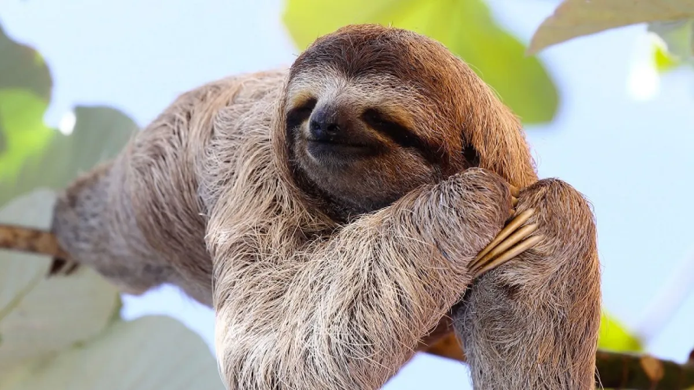
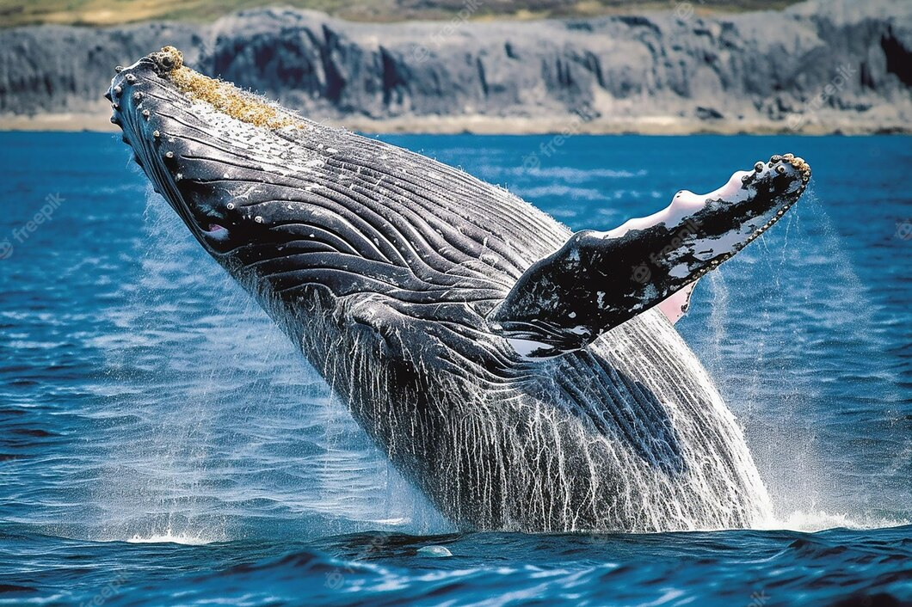

Une étoile est une boule géante de gaz chaud que
l'on peut comparer à un énorme moteur brûlant surtout
de l'hydrogène. Dans le noyau des étoiles, les atomes
se soudent grâce à la réaction physique appelée fusion
nucléaire, ce qui libère d'énormes quantités d'énergie sous
forme de lumière et de chaleur Qu'est ce qu'est une étoile ?
Une étoile produit de la lumière, tandis qu'une planète
reflète celle de son Soleil. Les étoiles, ces énormes boules
de gaz très chaudes, brillent car leurs tailles et leurs masses
sont importantes. Elles sont beaucoup plus grosses que
les planètes rocheuses ou gazeuses
Quel est l'étoile la plus importante ?V1 est l'étoile
la plus importante de l'Univers – du moins lorsqu'il s'agit
d'appréhender ses véritables dimensions. « Cette lettre
a détruit mon Univers », déclare l'astronome Harlow Shapley
après que Hubble lui a écrit pour l'informer de sa découverte

Un écosystème à lUi toUt seUl À l'état sauvage, le paresseux
vit entre 10 et 15 ans, tandis que sa longévité peut atteindre les 30 ans en captivité.
Bien qu'il s'agisse d'un animal de taille moyenne, la gestation avoisine les 11 mois,
et le paresseux ne s'accouple qu'aux 18 à 24 moisQuel est l'autre nom du paresseux ?
Unau, ou paresseux de Hoffman (Choloepus hoffmanni)
Quel est la fonction de paresseux ?
A. − Qui répugne au travail, à l'effort; qui manifeste habituellement de la paresse physique
Comment se nourrit le paresseux ?
Le paresseux à deux doigts mange surtout des feuilles, comme celles du cecropia,
mais également des jeunes pousses, des petites branches, des bourgeons, des fleurs,
des fruits et des racines tubéreuses.Description physiqueLe paresseux est un mammifère
au pelage long et rêche, de couleur brune/grise ou beige, à tendance verdâtre.
Il mesure entre 45 et 75 cm, pour un poids d'environ 4 kilos.
Ses bras et ses jambes sont terminées par trois doigts munis de grosses
griffes (certaines espèces n'ont que deux doigts). Ses 9 vertèbres cervicales
lui permettent de tourner la tête à 270 degrés. Sa tête est ronde, son nez retroussé
et ses oreilles peu développées. Il possède également une queue très courte.
Son lieu de vie
Les paresseux vivent dans les forêts d'Amérique tropicale : on en trouve notamment
au Costa Rica et au Panama, mais aussi en Guyane, en Argentine, au Brésil et en Bolivie.
Son alimentation
Le paresseux se nourrit essentiellement de feuilles qu'il trouve dans les arbres où
il passe le plus clair de sa vie. Ses 18 dents lui permettent de les mastiquer sans problème.
Il a une préférence pour les feuilles des arbres de type Cecropia. Parfois, il peut déguster

La baleine bleue : l'animal le plus gros de la planète Avec de telles mensurations,
la baleine bleue possède des organes gigantesques : son cœur pèse plus de 120 kilogrammes,
son foie pèse 1 tonne et sa langue près de 3 tonnes. Lorsqu'il vient au monde, le baleineau
mesure 7 mètres et pèse 2,5 tonnes Quelles sont les caractéristiques de la baleine ?
La baleine à bosse peut mesurer jusqu'à 14 m de long, et peser 25 000 kg. Son nom vient
d'une bosse de graisse discrète placée devant la nageoire dorsale. Il s'agit d'un mammifère
avec deux nageoires pectorales qui peuvent faire le tiers du corps entier de l'animal,
soit 6 m pour les plus grands spécimensQuelle est la taille de la plus grande baleine du monde ?
L'énorme crâne du mastodonte décrit cette semaine dans la revue Biology Letters confirme que
cette ancienne baleine bleue est à ce jour la plus grande du registre fossile, atteignant 25 m
de long. C'est presque la taille de la baleine bleue moderne, dont la longueur peut
atteindre 30 m
bienvenue dans les loisir
Félicitation
Aimons toujours ce que nous faisons
Voici Mm Coralie! deux tournois avec titularisations.Plus de 20 match toujours à fond
Malgré que zéro point marqué. zéro point défendu et une genoulliere de profesionnel.
Elle est tout simplement heurese.
Quel courage! quel culot! faire play avant tout
Pas de vision pas de chocolat
Feciliation d'avoir mal lu le premier mot tu viens de le rélire mais
je voulais t'offir un choloct mais ça aussi tu as mal lu
Regarder les etoiles
Tes preferées🌞étaient dérriere les nuages.
tu les verras depuis chez toi,ou les couchées
des lacs de la suisse. sinom ,appelle fonction!